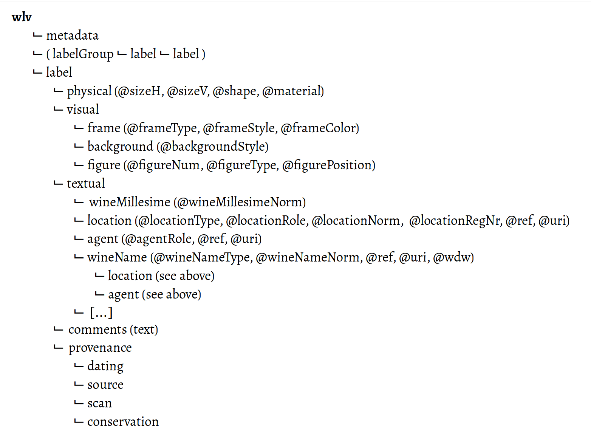

<!doctype html>
<html>
	<head>
		<meta charset="utf-8">
		<meta name="viewport" content="width=device-width, initial-scale=1.0, maximum-scale=1.0, user-scalable=no">

		<title>Weinetiketten (Blockseminar)</title>

		<link rel="stylesheet" href="dist/reset.css">
		<link rel="stylesheet" href="dist/reveal.css">
		<link rel="stylesheet" href="dist/theme/simple.css">

		<!-- Theme used for syntax highlighted code -->
		<link rel="stylesheet" href="plugin/highlight/monokai.css">
	</head>
	<body>
		<div class="reveal">
			<div class="slides">

<section data-markdown=""
         data-separator="^\n--\n" 
         data-separator-vertical="^\n---\n" 
         data-separator-notes="^::" 
         data-charset="utf-8" 
         data-background-image="img/basics/uni-trier_icon.jpg" 
         data-background-size="80px" 
         data-background-position="right 10px top 10px">

<script type="text/template">
<!-- ============ BEGINNING OF SLIDE CONTENT =========== -->
<br/>

### Weinetiketten im Wandel (Blockseminar)
<br/>
<hr/>
<br/>Sitzung am 22. Jan. 2022
<br/>Prof. Dr. Christof Schöch
<hr/>
<br/>Wintersemester 2021/2022
<br/>Universität Trier
<br/>
<hr/>


--
## Ziele der Sitzung und Ablaufplan

---
### Ziele 
* Verständnis entwickeln für die Prinzipien und Details der digitalen Erschließung von Weinetiketten
* Praktische Erfahrung sammeln bei der Kodierung von Etiketten in XML
* Ideen für die Verbesserung des Vorgehens sammeln und ggfs. umsetzen
* Ideen für die weitere Nutzung der Informationen entwickeln


---
### Ablaufplan
<small>

| Zeit    | Format    |  Thema                                               |
|:--------|:---------:|:-----------------------------------------------------|
| 8h30    | Input     | Begrüßung                                            |
| 8h45    | Input     | [Ein Beispiel zum Einstieg](#/2)                     |
| 9h00    | Input     | [Grundlagen von XML](#(3)                            |
| 9h45    | Gemeinsam | [Software-Installation](#(4)                         |
| 10h15   | ---       | Pause                                                |
| 10h45   | Input     | [Erschließung von Weinetiketten (Datenmodell)](#(5)  |
| 12h00   | Tandems   | [Praxis: Kodierung von Etiketten](#(6)               |
| 13h00   | ---       | Pause                                                |
| 14h00   | Input     | [Normdaten für die Kodierung](#(7)                   |
| 15h00   | Tandems   | [Hinzufügen von Normdaten zu den Etiketten](#(8)     |
| 15h30   | ---       | Pause                                                |
| 16h00   | Gemeinsam | [Probleme und Ideen für die Kodierung](#(9)          |
| 16h30   | Input     | [Perspektiven für die Auswertung und Analyse](#(10)  |
| 17h00   | Input     | [Abschlussdiskussion](#(11)                          |

</small>


--
## Ein Beispiel zum Einstieg

---
### Wiltinger 1939
<a href="img/MSR-0002_Wiltingen_1200x.jpeg"></a>
<br/>

* Bildatei (Wiltinger, 1939): https://raw.githubusercontent.com/dh-trier/wlv/master/msr/img/MSR-0002_Wiltingen_1200x.jpeg 
* Kodierung in XML: https://raw.githubusercontent.com/dh-trier/wlv/master/msr/xml/MSR-0002_Wiltingen.xml


--
## Grundlagen von XML 


---
### Ressourcen 
* XML-Einführung (Auszeichnungssprachen): https://github.com/dh-trier/Auszeichnungssprachen/raw/main/pdf/Markup-E04-Textauszeichnung.pdf


---
### Literaturhinweise


--
## Software-Installation:<br/>Visual Studio Code


---
### Download-Links 
* VSC Download-Seite: https://code.visualstudio.com/download
* Hinweise zu Extensions: https://code.visualstudio.com/docs/editor/extension-marketplace
* Installation von 'Scholarly XML': https://marketplace.visualstudio.com/items?itemName=raffazizzi.sxml


--
## Erschließung von Weinetiketten (Datenmodell)

---
### Überblick
1. Was ist Datenmodellierung?
1. Warum ein Datenmodell? 
1. Konzeptuelle Ebene
1. Dokumentation
1. Schema-Datei


---
### Was ist Datenmodellierung? 
* Recherche- / Brainstorming-Phase
* Sammeln im Cryptpad (Link: siehe Wiki in StudIP)

---
### Warum ein Datenmodell?
* Konzeptuell: 
  * Dokumentiert unser Verständnis der Struktur und Semantik des Gegenstands
* Technisch: 
  * Stellt die einheitliche Erschließung der Etiketten sicher
  * Ermöglicht die automatische Weiterverarbeitung der Informationen

---
### Datenmodell (Übersicht)
<a href="img/WLV-Datenmodell-Übersicht.png"></a>


---
### Dokumentation 
* Überblick zu Kodierung:<br/>https://github.com/dh-trier/wlv/wiki/Describing-wine-labels
* Dokumentation aller Elemente und Attribute:<br/>https://github.com/dh-trier/wlv/blob/master/schemas/wlv-label-docs.md


---
### Schema-Datei
* https://github.com/dh-trier/wlv/tree/master/schemas (RNG)


--
## Praxis (in Tandems):<br/>Kodierung eines Weinetiketts


--
## Normdaten für die Kodierung 


---
### Was sind Normdaten? 
* Normdaten werden von Bibliotheken oder anderen Infrastrukturen angeboten
* Normdaten definieren und identifizieren Entitäten
* Klassiker: die Gemeinsame Normdatendatei der DNB (Autoren, Werke, Sachthemen), siehe: <br/>https://www.dnb.de/DE/Professionell/Standardisierung/GND/gnd.html


---
### Wozu dienen Normdaten? 
* Disambiguierung von Strings in Quellen
* Eindeutige Identifikation von Entitäten
* Algorithmische Auffinden weiterer Informationen
* Vernetzung der Daten in der Linked Open Data Cloud


---
### Welche Normdaten sind relevant? 
1. Ortsnamen: Identifier (und Geokoordinaten), bspw.: Wikidata, Getty Thesaurus
1. Unternehmen: Identifier (und Ort), bspw.: Wikidata
1. Weinlagen: Identifier (und Ort), bspw.: Lagenliste, Wikidata 
1. Bildelemente: Identifier, bspw. Wikidata, ICONCLASS


--
## Hinzufügen von Normdaten 


--
## Probleme und Ideen für die Kodierung


--
## Perspektiven für die Auswertung und Analyse


--
## Abschlussdiskussion


<!-- ============ END OF SLIDE CONTENT =========== -->
</script>
</section>
</div>
</div>

<script src="dist/reveal.js"></script>
<script src="plugin/notes/notes.js"></script>
<script src="plugin/markdown/markdown.js"></script>
<script src="plugin/highlight/highlight.js"></script>
<script>
	// More info about initialization & config:
	// - https://revealjs.com/initialization/
	// - https://revealjs.com/config/
	Reveal.initialize({
        hash: true,
        progress: true,
        slideNumber: true,
        fragments: true,
        center: false,
	// Learn about plugins: https://revealjs.com/plugins/
		plugins: [ RevealMarkdown, RevealHighlight, RevealNotes ]
	});
</script>
</body>
</html>
